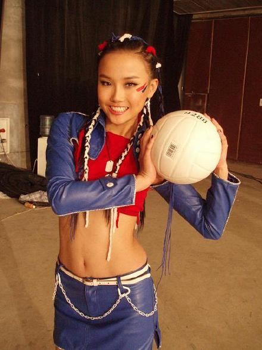
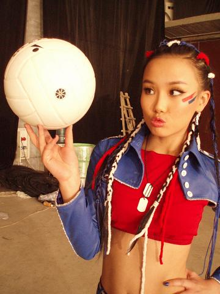

北京归来拉,迫不及待想SHOW给大家看我的排球女将造型.在北京拍摄百事可乐广告和百事可乐MV,这张照片是MV里的造型,从头到脚都是我喜欢的百事色,很好看但很不好受,北京气温零下五度,有一天是在室外拍摄的,除了每天只有两小时睡眠时间,还要每天顶着这个算是黑人百事头睡觉,不能洗头,头痒也不能狂抓.最刺激的就是和气温作战.
百事可乐的主题主要是以爱中国为主题,将音乐,街舞,中国武术和奥运完美结合在一起.这次拍摄的主要成员就是百事新签约的奥运明星和我们四个主要演员一起.我们四个演员在MV里除了要跳百事的<爱中国>舞蹈之外,还有就是最让我兴奋地,让我们每个人代表一项运动,有拳击,篮球,足球和排球.曾经练过三年排球的排球对队长,当然是当值无愧要代表排球拉,哈哈,那天我真的好兴奋,仿佛又回队了一样,很有领袖的感觉.非常非常怀念排球队的生活,曾经梦想成为国家队排球运动员,如果不是因为身高,说不定我现在已经能以运动明星的身份来参与百事的拍摄呢?,也许真的是我和和唱歌有缘分吧.

